はじめに
副収入は欲しい。でも、ずっと自分が動き続ける副業はしんどい。
物価は上がる。生活コストも上がる。将来のお金の不安もある。けれど、収入は思ったように増えない。だからこそ、多くの人が「何か副収入を作れないか」と考えます。
ただ、ここで大事なのは、何でもいいから副業を始めることではありません。時間の切り売り型の副業だけを選ぶと、自分が動かないと収入が止まりやすくなります。
毎回ゼロから考えて、毎回同じ作業をして、売れるたびに納品で疲弊する。この状態だと、売上が増えても、自由な時間はなかなか増えません。むしろ、売れるほど忙しくなることさえあります。
僕が言っている「寝てても回る仕組み」は、何もしなくてもお金が降ってくる魔法ではありません。売るものが決まっている。出品ページがある。商品画像がある。納品物の型がある。購入後の流れがある。納品メッセージがある。リピート導線がある。こういう“毎回ゼロから悩まない状態”を作ることです。
占いで誰でも稼げる、という話ではありません。ココナラで販売しやすい「占い鑑定書」という形に、AIを使って出品文・画像文言・鑑定書・納品文・注意書きを一式化し、初心者でも迷いにくい流れを作る話です。
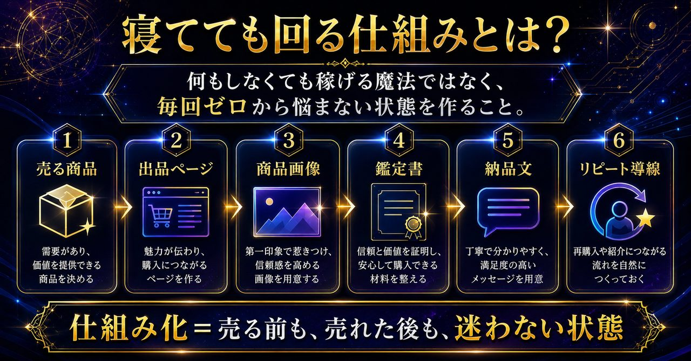
第1章
“寝てても回る仕組み”の正体は、売る前と売れた後の型です。
副業で一番しんどいのは、作業量そのものよりも、毎回ゼロから考えることです。毎回タイトルを考える。毎回説明文を考える。毎回画像文言を考える。毎回納品文を考える。毎回注意書きを考える。これでは、売れるほど忙しくなります。
逆に、仕組み化されている状態は違います。売る商品が決まっている。出品ページの構成がある。商品画像の型がある。鑑定書テンプレがある。購入後に聞く内容が決まっている。納品文も用意されている。
ここまで整っていれば、売れた後に慌てにくくなります。最初に仕組みを作る作業は必要です。ただ、一度作った型が残るから、次回以降の作業が軽くなる。売る前の準備だけでなく、売れた後の対応まで型にしておくこと。これが“ストック型の収益導線”を作るうえで重要な考え方です。
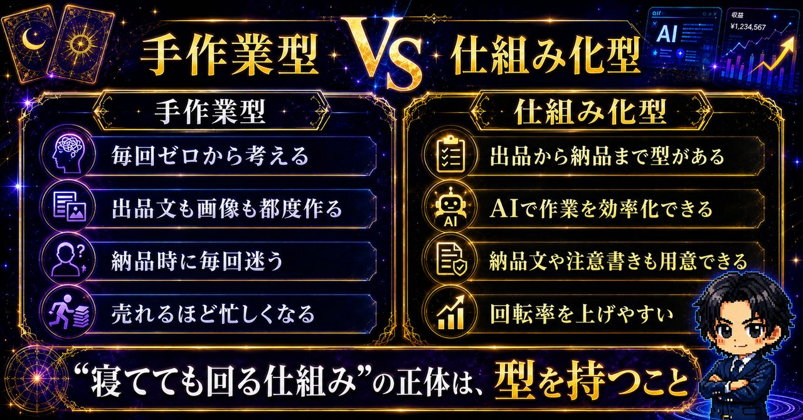
第2章
なぜ今、ココナラ×AI×占い鑑定書販売なのか。
ココナラは、初心者でも商品を置きやすい場所です。自分で決済システムを作る必要がなく、サービスを探している人に商品を見てもらえる環境があります。もちろん、出せばすぐ売れるわけではありません。だからこそ、商品ページと納品の型を整えることが大事になります。
その中でも占いジャンルは、競合が多いのは事実です。けれど、悩みが明確という強みがあります。恋愛、復縁、相手の気持ち、仕事運、人間関係、金運。こうした悩みは、相談内容が分かりやすく、商品テーマとして切り出しやすい領域です。
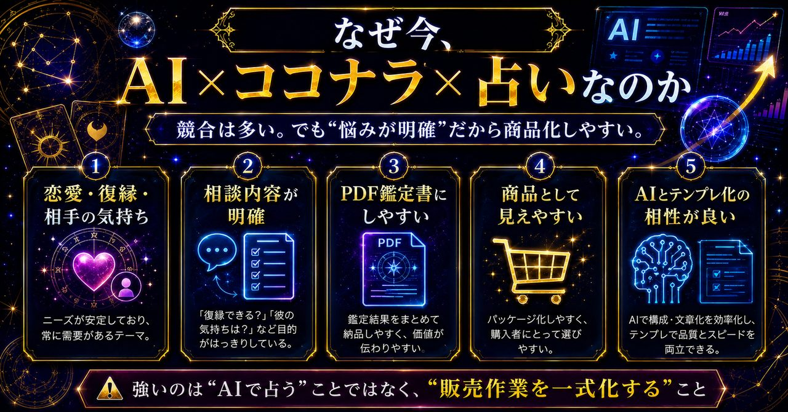
さらに、占いは「鑑定書」という納品物にしやすい。文章として価値を見せやすく、PDFにまとめやすく、テンプレート化しやすい。ここにAIを組み合わせると、出品文、商品画像の文言、鑑定書本文、納品メッセージなど、販売作業全体を効率化しやすくなります。
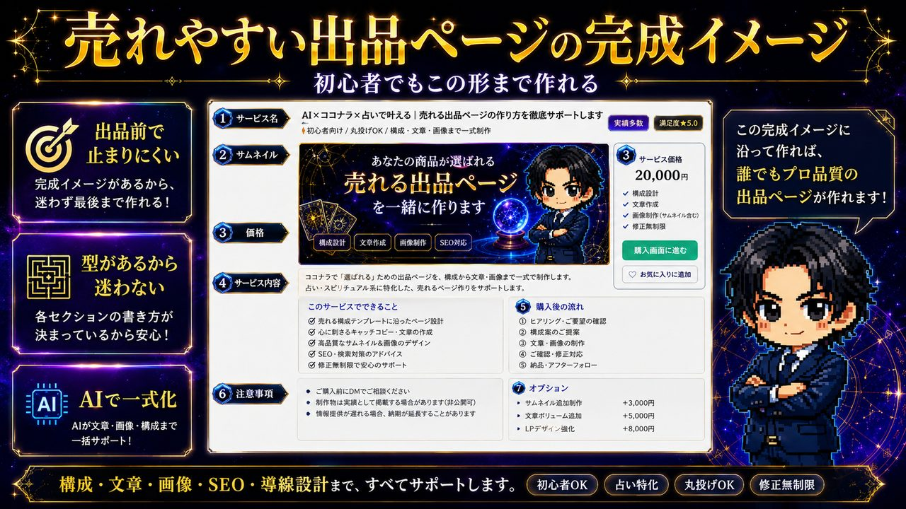
超先行導入モニターの実績
入口商品でも、型があるとここまで動きやすくなります。
ここまで読んで、「本当に初心者でも動かせるの？」と感じた方もいると思います。そこで、超先行で導入していただいたモニターさんの共有内容を一部紹介します。
大きなポイントは、いきなり高単価を狙うことではありません。まずは入口商品を作り、出品ページ・商品画像・ヒアリング・鑑定書・納品文までの流れを整えること。そこにAIを使って作業を効率化すると、低単価でも回しやすくなり、オプションや追加提案にもつながりやすくなります。
まずは始めやすい価格帯で商品を置き、受注後は占いくんにヒアリングと鑑定書作成を任せる流れへ。
3,000円台の商品でも、作業が自動化されることで疲弊しにくくなったという声。
おひねり・高単価オプション・追加提案など、入口商品から広げる動きも見えています。
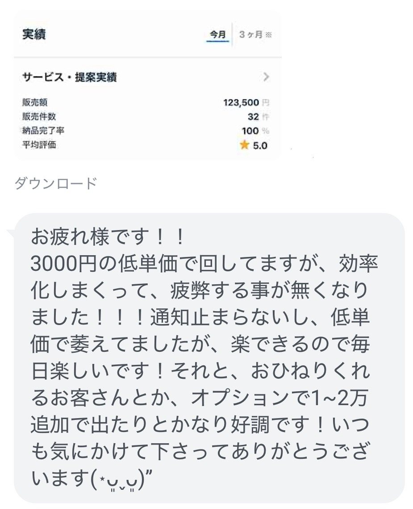
掲載している内容は、超先行導入モニターの一例です。成果や売上を保証するものではありません。ただ、出品から納品までの型を作り、AIで作業を効率化することで、初心者でも動きやすくなるイメージはかなり伝わるはずです。
第3章
初心者が止まる本当の理由は、スキル不足より“型がないこと”です。
占いジャンルに興味があっても、多くの人は出品前に止まります。何を出品すればいいのか分からない。出品ページが作れない。商品画像が作れない。鑑定書の形が分からない。PDF納品の流れが分からない。購入後メッセージが分からない。注意書きが分からない。
これは、占いの才能だけの問題ではありません。販売作業の型がないから止まっているケースが多いです。つまり、最初に必要なのは、いきなり占い師レベルを目指すことではなく、出品から納品までの順番を持つことです。
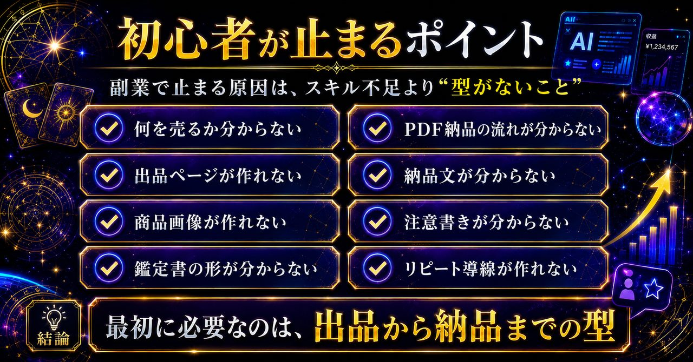
型があると、やることが分かります。順番が決まります。出品する前に何を作るべきか、注文が来たら何を聞くべきか、納品時に何を送るべきかが見えてきます。この安心感が、初心者にとってかなり大きいです。
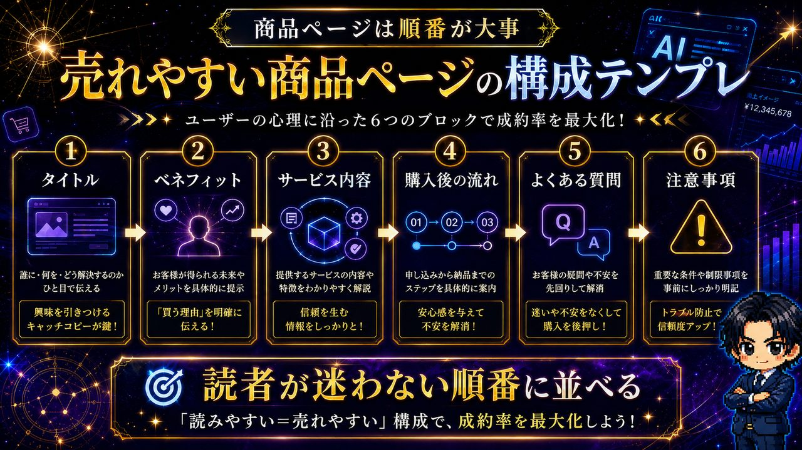
第4章
AIに任せるべきなのは、未来の断定ではなく販売作業の一式化です。
AIを使うときに大事なのは、「AIに未来を断定させること」ではありません。「必ず当たる」「絶対に復縁できる」「この通りにすれば成功する」。こういった表現は、信頼を落としやすく、トラブルにもつながりやすい。
AIに任せるべきなのは、相談内容の整理、鑑定書の構成、読みやすい文章化、商品画像文言、ココナラ出品ページ、購入後メッセージ、納品メッセージ、注意書き、品質チェックといった作業部分です。
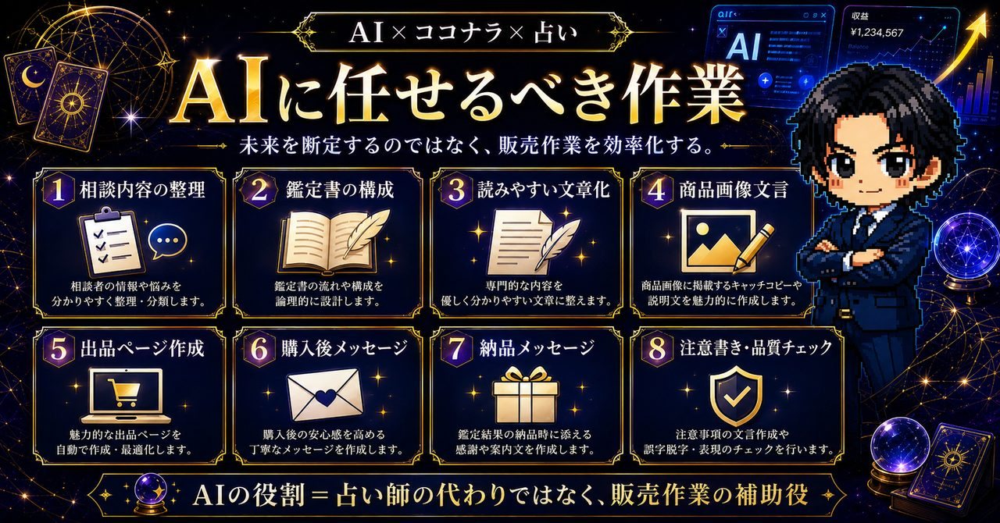
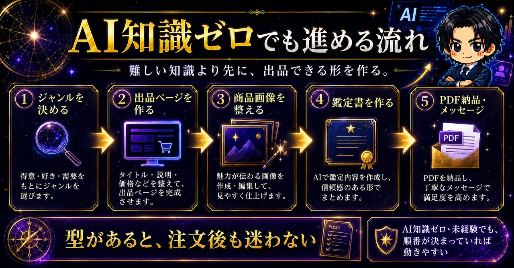
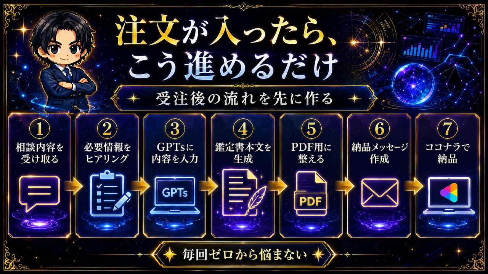
第5章
占いジャンルで大事なのは、見せ方と導線です。
同じ占いでも、見せ方で印象は変わります。黒×金×紫の高級感。悩みに刺さるタイトル。プロっぽく見える鑑定書の質感。こうした世界観は、購入者に「ちゃんとしていそう」という印象を与えます。
さらに、商品ページの順番も重要です。タイトル、ベネフィット、サービス内容、購入後の流れ、よくある質問、注意事項。この順番が整理されているほど、読者は迷わず判断しやすくなります。
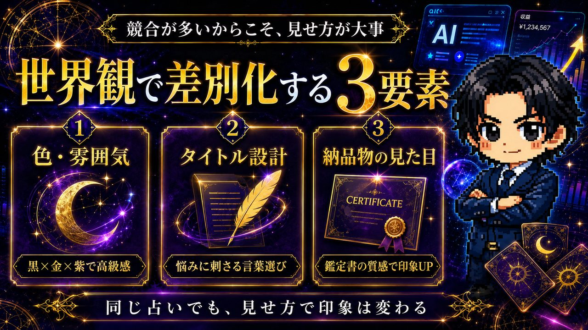
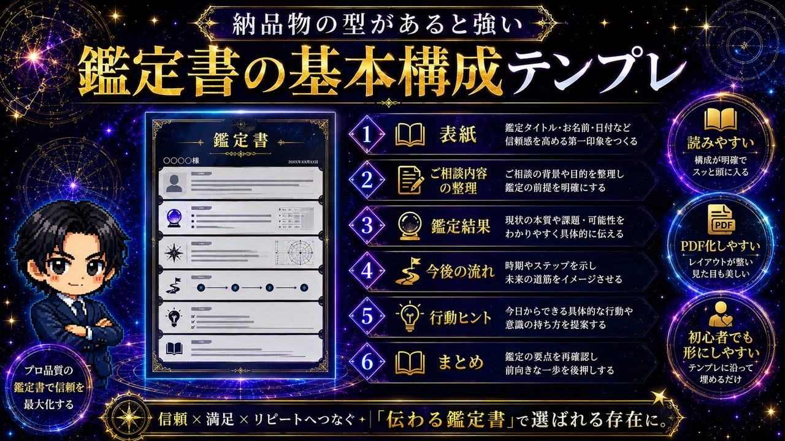
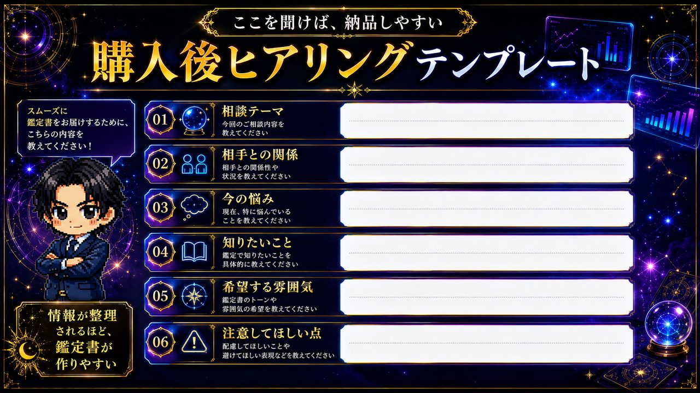
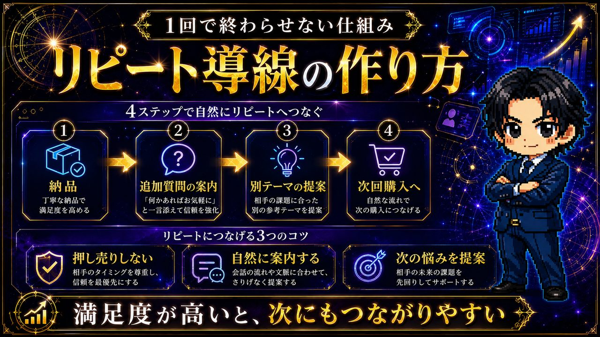
第6章
年間300万のストック資産を狙うなら、一発逆転より積み上げです。
「年間300万」と聞くと、大きく感じるかもしれません。ただ、考え方としては月25万円を12ヶ月続けると年間300万円です。もちろん、これは収益を保証するものではありません。
重要なのは、一発で大きく稼ぐことではなく、売れる商品を作り、注文後の流れを整え、納品の型を作り、改善しながら回すことです。つまり、ココナラ上に長く動かせるストック型の収益導線を作るという考え方です。
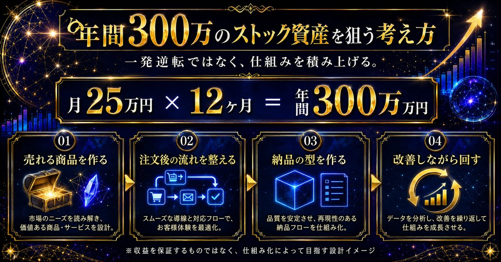
第7章
フルオートシステム占いくんは、占い師になる教材ではありません。
今回作った「フルオートシステム占いくん」は、占い師としての専門資格を作る教材ではありません。ココナラで占い鑑定書販売を始めたい人が、出品から納品まで迷わず進めるためのAI補助GPTsです。
できることは、占いジャンル診断、ココナラ出品ページ作成、商品画像文言作成、鑑定書本文作成、PDF貼り付け用整形、購入後メッセージ、納品メッセージ、注意書き、品質チェック、販売導線アドバイスなどです。

一番の価値は、自分で全部をゼロから考えなくていいことです。作るものが分かる。進める順番が分かる。納品までの流れが分かる。だから、途中で止まりにくくなります。
まとめ
今必要なのは、時間の切り売りだけではなく、仕組み化です。
副収入を作る方法はたくさんあります。ただ、長く続けるなら、毎回ゼロから考える副業よりも、商品と導線を整えて改善していく副業の方が現実的です。
ココナラ×AI×占い鑑定書販売は、その最初の一歩として相性が良い選択肢です。占いは悩みが明確で、鑑定書にしやすい。ココナラは初心者でも商品を置きやすい。AIは出品文、画像文言、鑑定書、納品文、注意書きの一式化を補助しやすい。
だからこそ、フルオートシステム占いくんは「占いで誰でも稼げる」と煽るものではなく、「占い鑑定書販売を始めるための型を持つ」ための仕組みです。型があると、迷う時間が減ります。納品までの流れが整います。改善もしやすくなります。
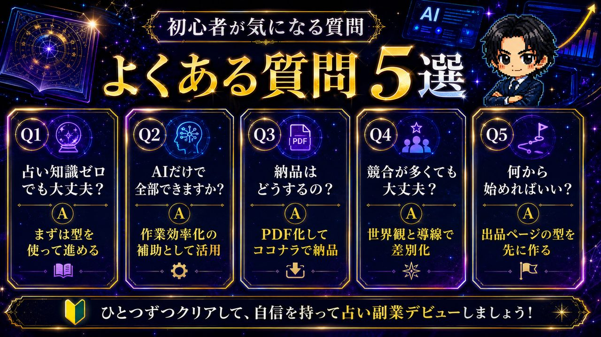